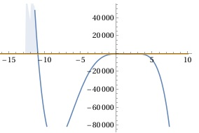

Aufgabe 54 Bestimmen Sie die Lösungsmenge der Ungleichung für x ∈ ℝ: -4,2x2(x + 11)(x - 3)2 > 0 -4,2x2(x + 11)(x - 3)2 > 0 |*(-1) aus > wird < 4,2x2(x + 11)(x - 3)2 < 0 ist der Fall, wenn 1. 4,2x2(x - 3)2 > 0 gilt für alle x ∈ ℝ und x + 11 < 0 |-11 x < -11 4,2x2(x + 11)(x - 3)2 < 0 trifft zu für L1 = x ∈ ℝ ∩ x < -11 = x < -11 2. 4,2x2(x - 3)2 < 0 gilt für kein x --> ∅ und x > -11 4,2x2(x + 11)(x - 3)2 < 0 trifft zu für L2 = ∅ ∩ x > -11 = ∅ L = L1 ∪ L1 = x < -11 ∪ ∅ L = x < -11 oder -4,2x2(x + 11)(x - 3)2 > 0 Nullstellen von -4,2x2(x + 11)(x - 3)2 = 0: - 4,2x2 = 0 |:(-4,2) x2 = 0 x1,2 = 0 doppelte Nullstelle, Berührpunkt x + 11 = 0 |-11 x3 = -11 (x - 3)2 = 0 |ⱱ |x - 3| = 0 x4,5 = 3 Die Funktionswerte von x < -11 liegen oberhalb der x-Achse, erfüllen also die Bedingung > 0. L = x < -11
